主题：畸形审美 项目人群：被“男凝”困扰的人群 项目目的：从旧时期的缠足陋习到后足流血也得穿的高跟鞋，父权制下的强迫性审美 一直在给女性造成困扰。这不仅体现在现在的劳动分工的所有等级符号中，同样体现 在性别之差的所有可见表现，例如着装。微不足道的日常行为包含了难以觉察的恢复 秩序的要求。那种让女性分散注意力的耗资耗时的想法，实际上都是为了避免你对父 权制度造成威胁。 项目通过让男性重新像高跟鞋被发明时期一样，体验穿高跟鞋，将穿着的感受以及遭 受的凝视记录下来，希望更多的人可以摆脱虚假的权威审美，自由追随自己的美。
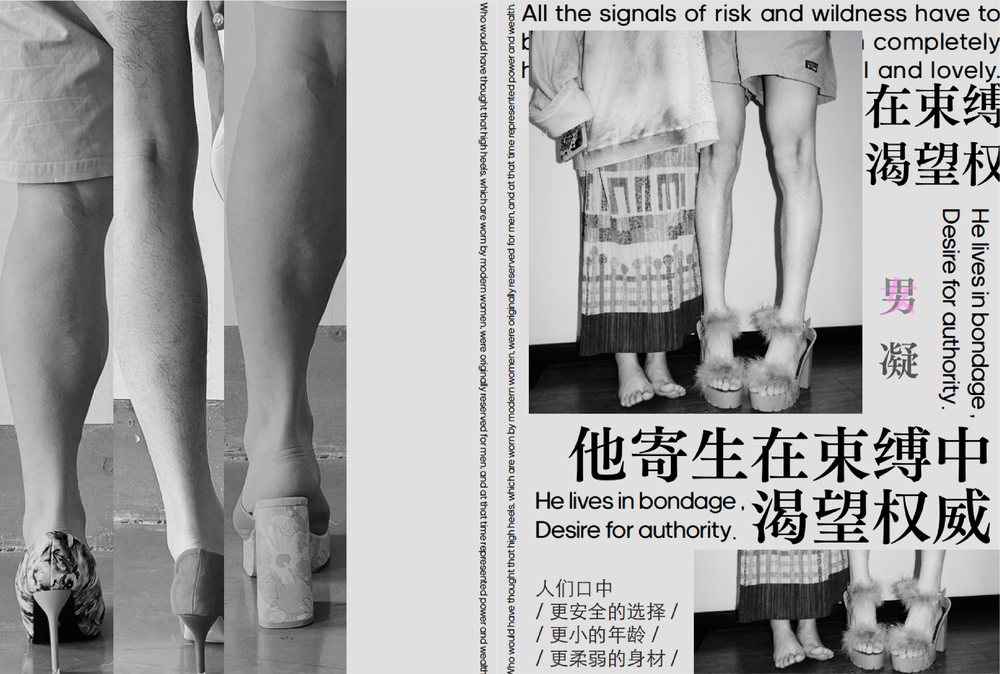
 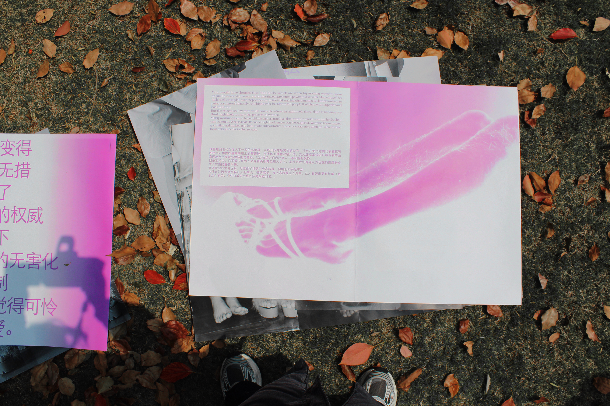
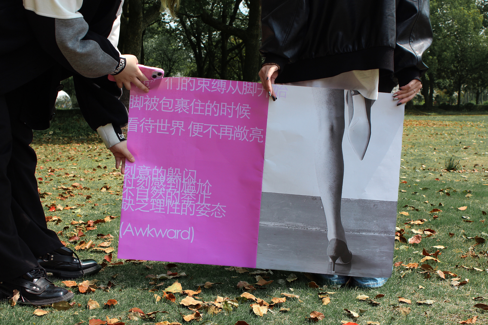
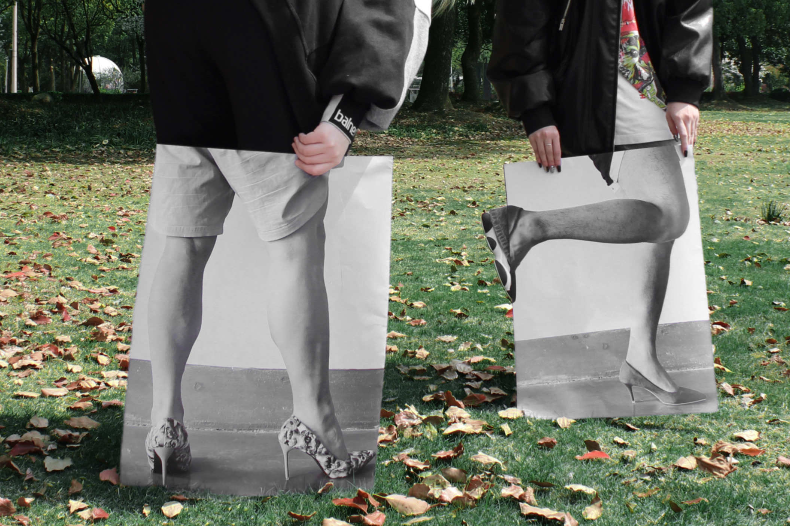
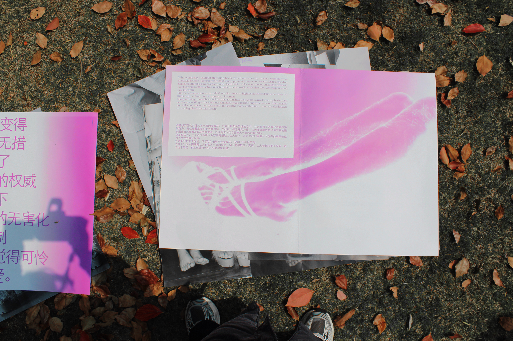
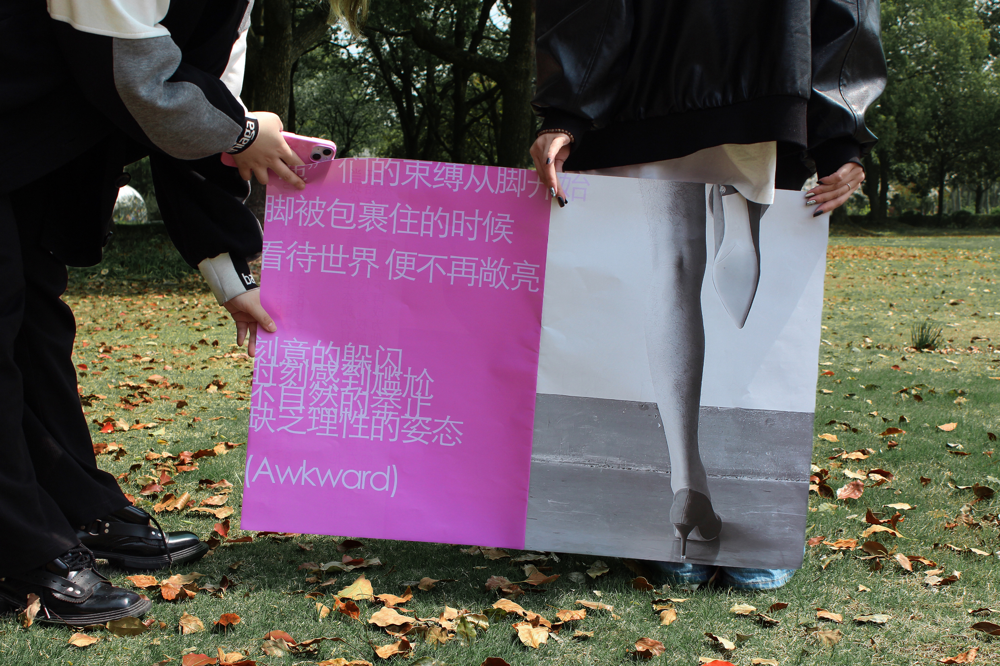
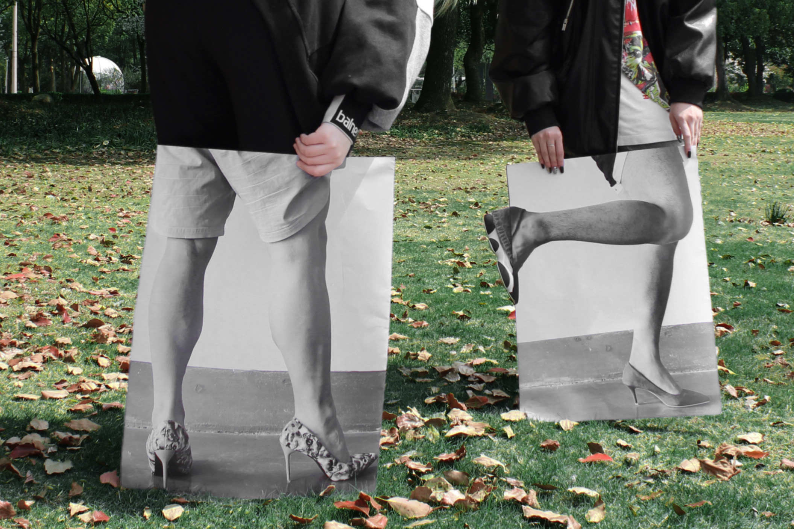
 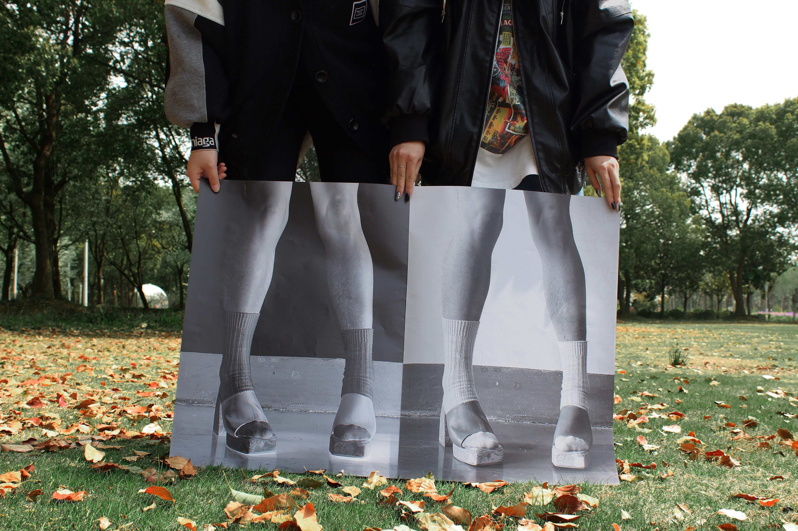
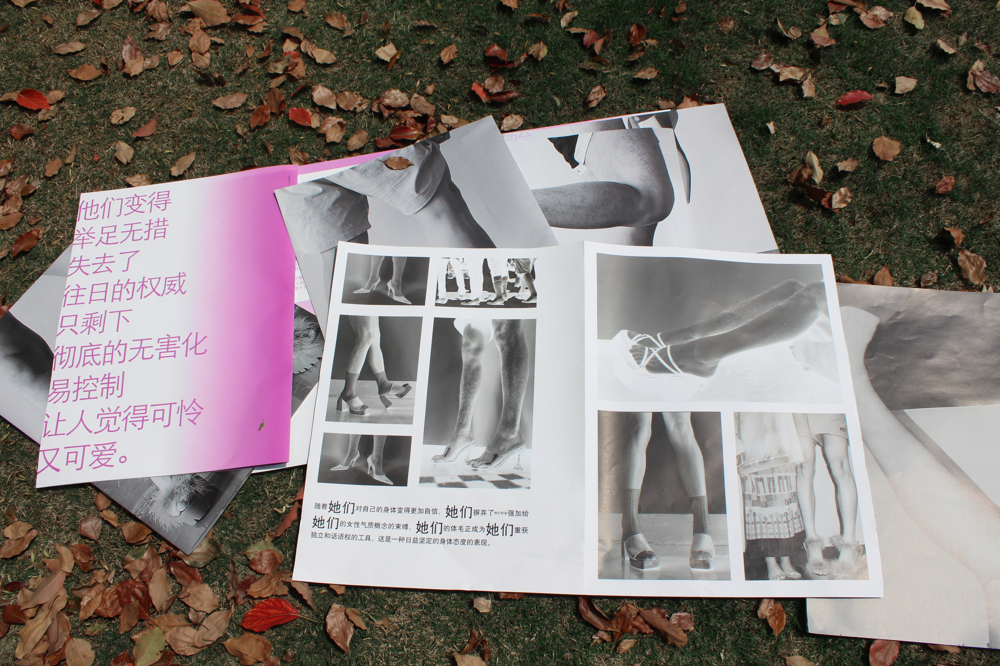
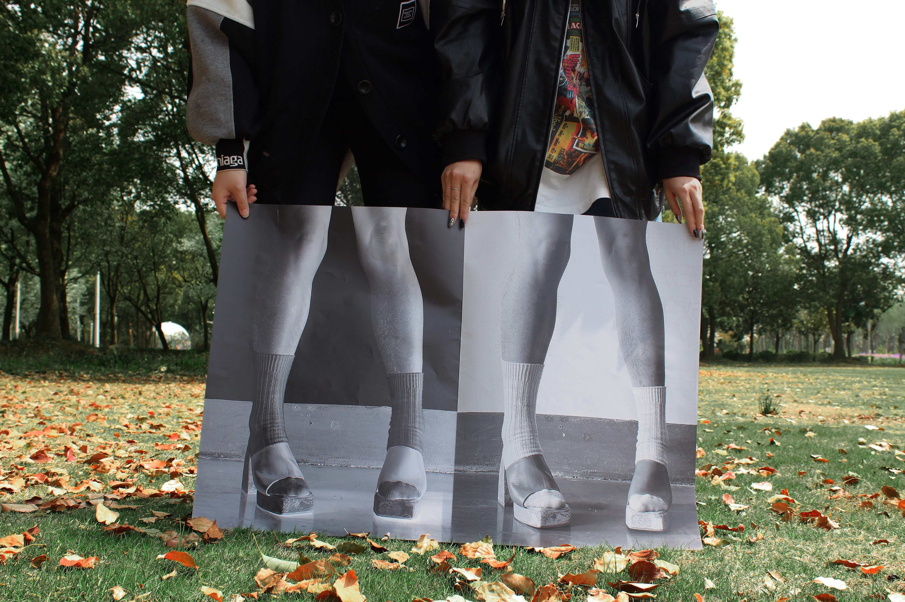
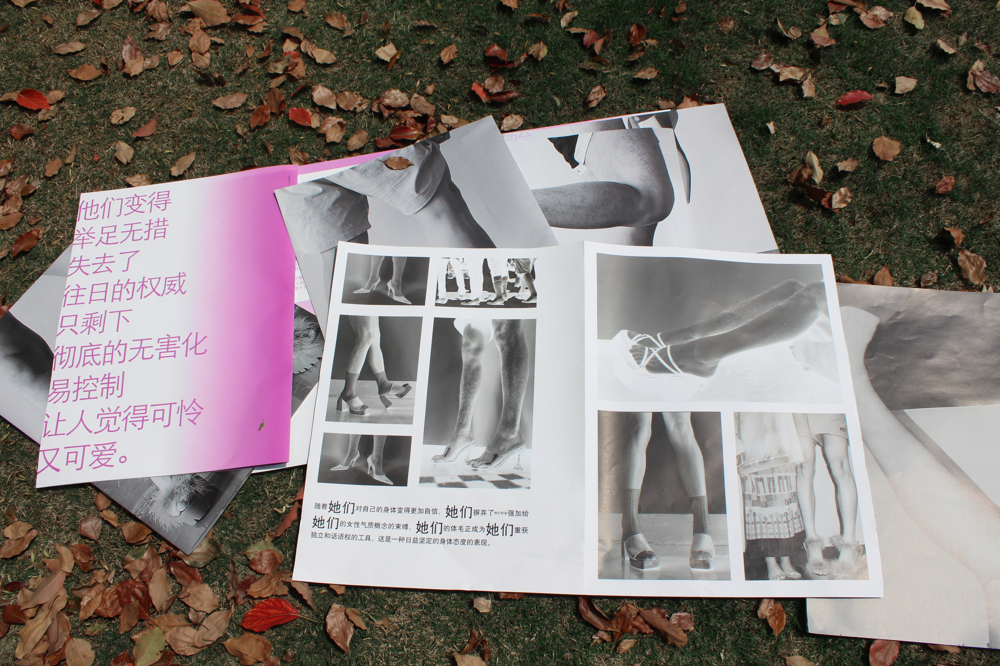